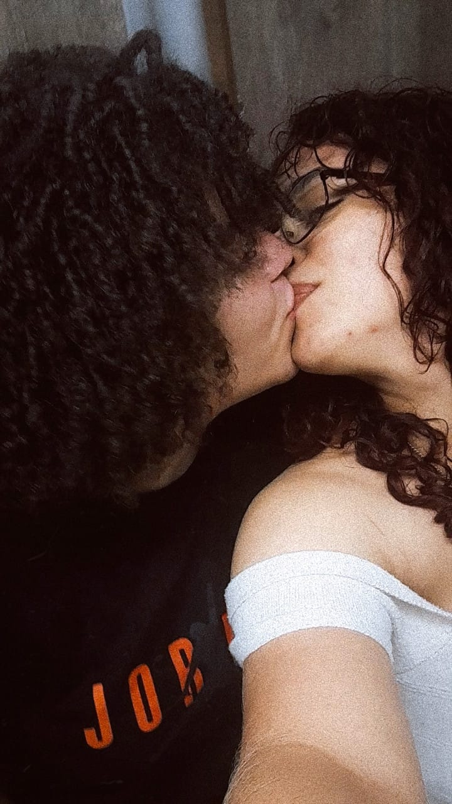

Eu não estou fazendo isso para precionar você, e sim pois
guardar estava pesando mais do que falar.

MINHA ALMA
AMOR
Não existem palavras que descrevam o tanto que eu sinto a sua falta ao meu lado desde suas risadas até o teu olhar me olhando e a gente tendo o nosso beijo de olho....
VOCÊ AINDA É QUEM EU AMO
e o tempo que passa não faz isso mudar
Recomeço?
Eu sei que talvez seja tarde demais, pra mim estar fazendo isso, mas você me conhece tão bem que disse "depois você vai entender" e de fato eu entendi, uma pena que talvez eu tenha demora pra perceber isso... Eu sei que por muitas vezes eu errei com você, não demonstrei os meus sentimentos da maneira que você se sentisse amada e valorizada e isso pode ter deixado a entender em vários momentos que as suas conquistas não importavam pra mim ou que estar com você era algo que pouco me importava ou até que nos meus plano para o fututo você não estava presente, mas muito pelo contrario todas as vezes que eu me imagino num futuro distante é com você... Naquele dia você me disse que eu encontraria outras pessoas, mas adivinha? Eu quero você e não outras pessoas eu quero errar e aprender com você e quero que todas as minhas primeiras vezes sejam com você bê, e te ver todos os dias e nem se quer poder olhar direito pra você me mata lentamente, é como uma ferida que nunca cicatriza e fica sendo cutucada todos os dias. Me perdoa se eu errei muito com você, mas eu só estou tentando amar pela primeira vez, eu quero aprender a te amar do jeito que você merece, porque você é a pessoa mais amável que eu já conheci, e com tudo isso eu só queria ouvir o seu sim novamente pra mim, mas vou entender se ouvir um não, até porque o nosso relacionameto nunca foi fácil e muito menos dependeu só de nós para acontecer. A minha perrgunta com tudo isso é se você aceita me ter de novo na sua vida? Não precisa me responde hoje, se sinta a vontade para responder o que for o seu desejo e demorar o tempo que for necessário, mas eu preciso dessa resposta pra saber se realmente eu devo, de uma por todas, levar a minha vida sem você presente nela.